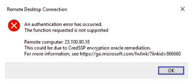

С одним из обновлений Windows 10 были изменены настройки безопасности (в связи с уязвимостью CVE-2018-0886) по умолчанию для подключений по RDP. Из-за этого при подключении к более старым (без последних обновлений после 13 марта 2018 г.) машинам Windows стала появляться следующая ошибка:

Как это исправить:
Нужно установить на сервер (старую машину, к которой пытаемся подключиться) обновления, связанные с RDP:
Windows 7 SP1 / Windows Server 2008 R2 SP1:
Windows Server 2012:
Windows 8.1 / Windows Server 2012 R2:
Windows 10 version 1607 / Windows Server 2016:
Windows 10 version 1703:
Windows 10 version 1709: